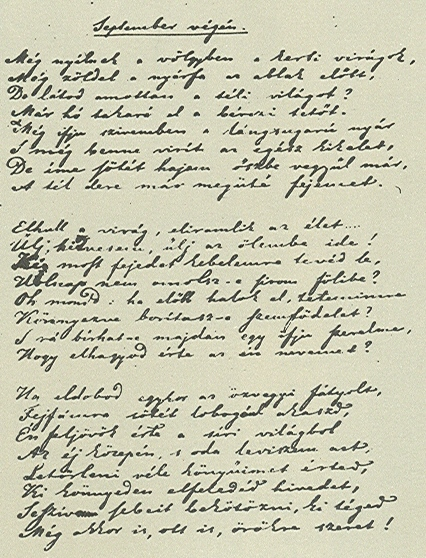
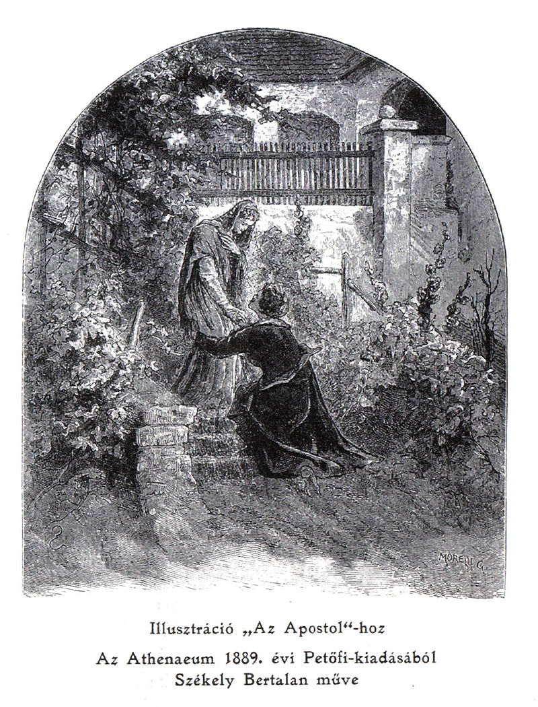

Petőfitől több mint 850 költemény maradt az utókorra. Évek szerint: 1838-ból 2, 1839: 7, 1840: 7, 1841: 22, 1842: 28, 1843: 36, 1844: 137, 1845: 166, 1846: 136, 1847: 160, 1848: 101, 1849: 20. Ezeket 68 helyen (városban és falun) írta (22 költeményénél helynév nincsen feltüntetve); a legtöbbet Pesten (370), aztán Szalkszentmártonban (109), Debrecenben (41), Koltón (29) stb. 1842-től az Athenaeum 20, a Pesti Divatlap 129, az Életképek 27 költeményt közölt tőle; 1847–49-ben a Hazánk 22, a Márczius Tizenötödike 4, a Közlöny 5, a Népbarátja 6, a Szépirodalmi Lapok 2 költeményt hozott Petőfitől. Költői pályájának első időszakában (1842–46) összesen 198 költeménye jelent meg különböző folyóiratokban és zsebkönyvekben; a második időszakban (1847–49) 125 költeménye jelent meg.
Petőfi újra és újra a maga életét alakította át költészetté. Vándorútját az országban mindenfelé költeményeinek dátumai jelzik, verseinek időrendi sorából életrajzára lehet következtetni, ugyanakkor élete is megmagyarázza költészetét. Kedélyállapota sokszor változott, ez hatást gyakorolt a látásmódjára is, közönséges tárgyakban is a költői oldalt látta. Költészetének a közvetlenség, őszinteség, természetesség egyik fő sajátossága. Ugyancsak jellemző műveire az eredetiség, érzelemgazdagság. Nyilvános pályája hét évre terjed (1842–1849), de rendszeresebben csak 1844-től, tehát öt éven át dolgozhatott és ez időben is folytonos fejlődésen ment keresztül.
A 19. század legfontosabb időszakának volt a költője, a hazafiságot, a demokrácia eszméit, a szabadságszeretetet fejezte ki, és addig példátlan mértékben hatott a nemzetre. Költészetében a magyar romantika teljesedett ki, de egyben meghaladta is azt, és így lett a lírai realizmus megteremtője. Költészete valószerűbb és magyarosabb, mint elődeié. Új érzelmi forrásokat, új távlatokat adott a magyar lírának. Költeményeiben egyaránt fellelhetőek olyan témák, mint a fiú szeretete szülei iránt, a hitves iránti szenvedély, vagy az Alföld dicsérete.
Nemcsak új tárgyakhoz nyúlt, hanem új hangot is talált, amely egyéni és közérthető is volt egyszerre. A nemzeti és a művészi elemet ő egyesítette először legszerencsésebben nemzeti művészetté, később pedig Arany János és Tompa Mihály a nyomdokaiba lépett. A líra sok fajában kitűnt, elégiában, ódában (szerelmi és hazafias ódái), a szatirikus és reflexív lírában, de különösen megteremtette – Gyulai szavaival élve – a specifikus magyar dalt. Nem a népdalt, hanem a népköltés külső és belső formáinak és szellemének felhasználásával, azt megnemesítve, az irodalmi magyar dalt. Gyors érzelmi átmenetek jellemzőek rá, ez azonban nem sérti lírájának összhangját. Lírai ereje nyilatkozik zsánerképeiben és leíró költeményeiben is.
Költészetének is, mint egyéniségének, voltak árnyoldalai. Helyenként prózai, nyers, féktelen; műérzéke sem mindenkor biztos, és képzelete olykor szertelenségbe ragadja. Egyébként pályáján fokozatos fejlődés figyelhető meg. Első verseiben még látszik Vörösmarty és Bajza, később egy-egy külföldi költő hatása, de e hatások (Béranger, Heine, Byron, Shelley hatásának nyomai) mind hamar leszűrődnek nála, és utánzójává egy költőnek sem válik.
Erőssége erkölcsi idealizmusa, amely mind hazafias, mind szerelmi költészetében uralkodik, és amit sohasem sért meg. Nyelve szemléletes, folyamatos és magyaros; költészete a népnyelvet a magyar irodalom részévé tette. A magyar lírába ő vitte be a magyar ritmust is; de a nyugat-európai versalakokat is gazdagon használja, és a lírát nemcsak magyaros, hanem modern nemzetközi stílusban is műveli. Epikai költeményei és regényei nem igen sikerültek; nem tudott tárgyilagosan írni.
Legjobb elbeszélő munkái között tartják számon a János vitézt, a Szilaj Pistát és a Bolond Istókot.
Műveinek 1847. évi kiadását az akadémia 1857-ben jutalommal koronázta, amelyet fia, Zoltán vett át. Idegen nyelvekre még életében elkezdték fordítani műveit.

A Szeptember végén kézirata

Székely Bertalan: Az Apostol – illusztráció, 1889
A költő újításai a magyar lírában
Addig ismeretlen témákat honosított meg a magyar költészetben: nála jelenik meg először a családi líra, tájköltészetében pedig a Puszta, a magyar Alföld méltó rajza.
Kezdeti költeményeiben, első kötetében követi a népiesség stílusát, amely a korszakban viszonylag friss felfedezés. Erdélyi János 1842-es tanulmánya az első, amelyben a népköltészetben rejlő lehetőségekről, a nép művészetének felfedezéséről, erejéről beszél. Petőfi e stílust követve addig nem létező műfajokat is meghonosított a magyar költészetben.
Költészete nyomán új hangok kerülnek a versekbe, nyelve felszabadul a Kazinczy-féle „fentebb stíl” használatától. Elhagyja a mitológiai elemeket, a finomkodó körülírásokat. Közérthetően, egyszerűen szól mindenkihez, a nép nyelvét beemeli az irodalomba úgy, hogy emellett megjelenik a kora művelt, tanult emberére valló szókészlet is. Az ő műveiben olvashatjuk először a világszabadság szót. A versek külcsíne helyett mindig a gondolatot állítja középpontba, fontosabb a mondanivaló, mint a forma tökéletessége.
Pályája, műfaji sokfélesége, legismertebb költeményei
Népies költemények: Befordúltam a konyhára… (1843), A virágnak megtiltani nem lehet… (1843), A borozó (1842), Ez a világ amilyen nagy… (1844), Szeget szeggel (1843), Távolból (1843), Anyám tyúkja (1848)
Családi költemények: Egy estém otthon (1844), Füstbement terv (1844), István öcsémhez (1844)
Elbeszélő költemények: A helység kalapácsa (1844), János vitéz (1845), Bolond Istók (1847), Az apostol (1848)
Útirajzok: Úti levelek, Életképek (1844)
Tájköltemények: Az alföld (1844), A Tisza (1847), A puszta, télen (1848), A Kiskunság (1848)
Szerelmi költemények: Fa leszek, ha… (1845), Reszket a bokor, mert… (1846), Ereszkedik le a felhő (1846), Szeptember végén (1847), Beszél a fákkal a bús őszi szél… (1847), Minek nevezzelek? (1848)
Forradalmi látomásköltészet: A XIX. század költői (1847), Egy gondolat bánt engemet… (1846), Nemzeti dal (1848), Föltámadott a tenger… (1848)
A szabadságharc versei: Csatadal (1848), A vén zászlótartó (1848), Európa csendes, újra csendes… (1849)
Hatása
Jelentősége egyedülálló a magyar irodalom történetében. Fölléptével vége szakadt az idegenszerűségnek és a mesterkéltségnek, és az a realizmus és nemzeti irány terjedt el, amelyet ő és Arany János kezdtek. Nemcsak népiessége vagy forradalmisága miatt jelentős, hanem a kortársakra gyakorolt hatása miatt is (példa erre barátja Arany, Tompa Mihály, Madách Imre és Vajda János költészete).
Egészen a 19. század végéig fellépő költőnemzedékek utánozni próbálták látszólagos könnyűségét, egyszerűségét; néhányan már életében is, de különösen az 1850-es években, általában kevés sikerrel. A halála utáni több mint fél évszázadban, egészen a Nyugat első nemzedékének megjelenéséig (Ady Endre, Babits Mihály, Kosztolányi Dezső), hatása egyeduralkodó volt a magyar irodalomban. A későbbi nemzedékekre is jelentős hatást gyakorolt például József Attila, majd Nagy László, Kányádi Sándor és mások költészetében is érződik hatása.
Petőfi művei abban is egyedülállóak, hogy világirodalmi alkotások is egyben. Több versét ismerik világszerte és költészete a fordításoknak köszönhetően az emberiség közkincse lett. Verseinek olyan a hatása, hogy Petőfi kedvéért külföldi írók tanultak meg magyarul.